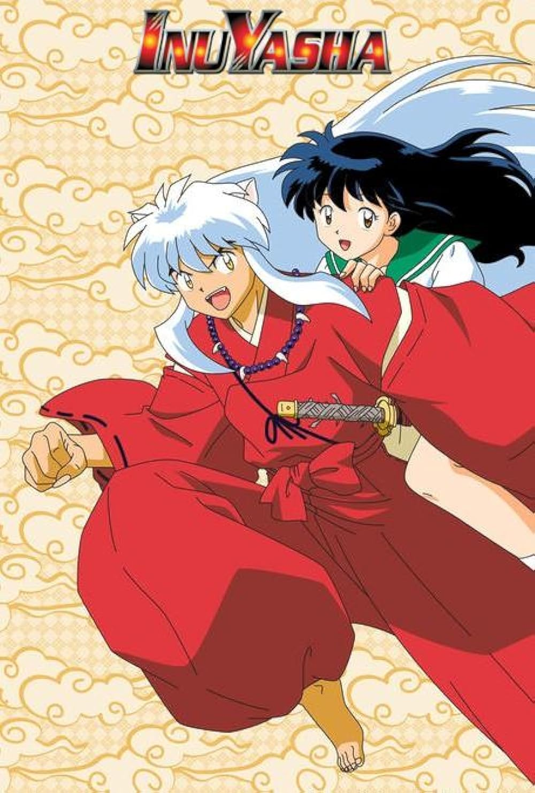
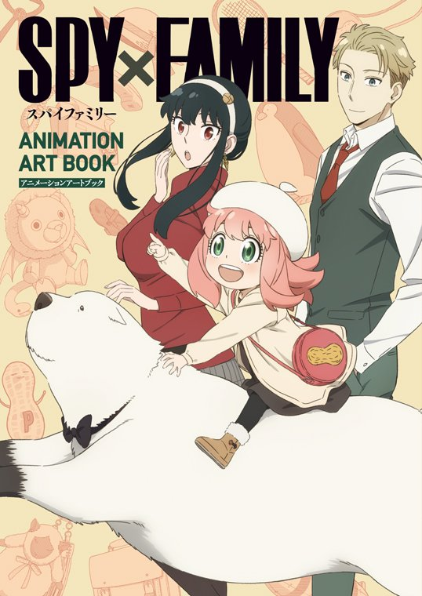
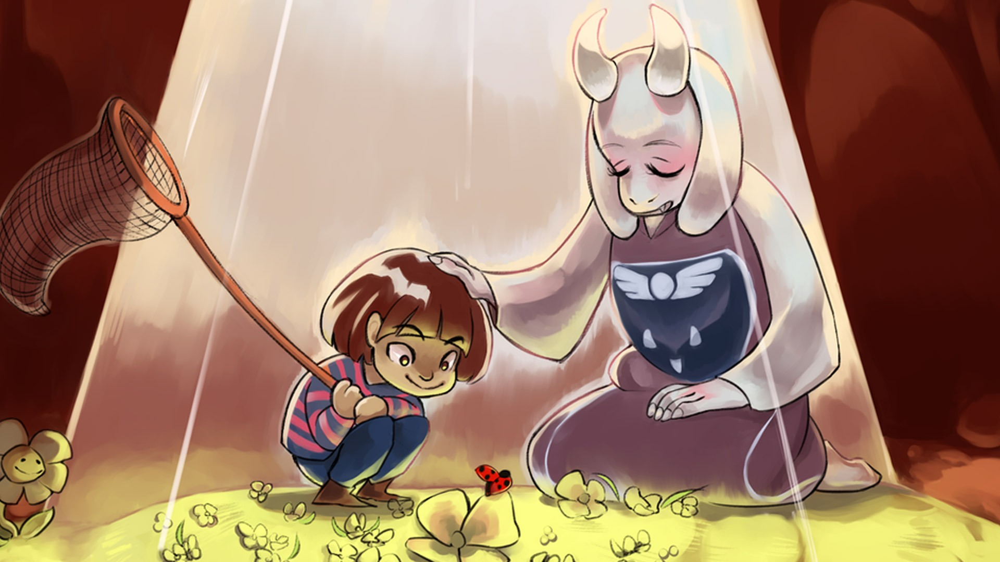

Canyon Hardy
Web Tech Page 1
All About Canyon!
My name is Canyon Hardy! My pronouns are they/them/theirs, and I am a nonbinary Montanan artist! I have been doing art since 4th grade, and have fallen in love with it ever since. My personal favorite medium is Digital, and I have been working off and on with this medium for around 6 years. Since I joined the University of Montana as an Art major in 2019, I have been trying to explore a lot more mediums to really make my understanding of art a lot more broad.

I do love art and often draw and create outside my career focused places, but I have a lot of other interests. Gaming is a huge one. I have been gaming since I was in middle school, and have really fell in love with it since then. When I joined UM, I also joined the Esports program here. I played on the Varsity Overwatch team for 3 years in the Esports program, Captaining the team for 2 of them. While overwatch is still one of my favorite games, I have really been enjoying Genshin Impact, Undertale, Saint Spell's Guide, and Doors. I really am interested in streaming too, but this is one of those hobbies that I feel might fade away as time goes on and I get busy. I love cosplay, and have actually won 3 cosplay contests before! I attended conventions like OokiisoraCon in Helena, Miscon in Missoula, and my personal favorite, Sakuracon, in Seattle.
My Interests!
I find inspiration in many different mediums, people, and platforms. For a current idea I have, to design and create a romance game, I find inspiration from Undertale. This game has affected me so many times throughout my life, and has only left a positive impact on me. Cartoons like She-Ra, Adventure Time, Steven Universe, Over the Garden Wall, and the Owl House have all inspired my current art style, and have also left me with positive impacts in other aspects of my life.
 I also often try to take inspiration from anime with really consistent art styles like Inuyasha, Love is War, Spy Family, and A Silent Voice in consideration to my work. In terms of other artists, I love Staryuu, Rebecca Sugar, Mincemeans, and, well, so many more. I find inspiration for my work from my queer experience, from my friends and peers in the art department, and from the media I experience.